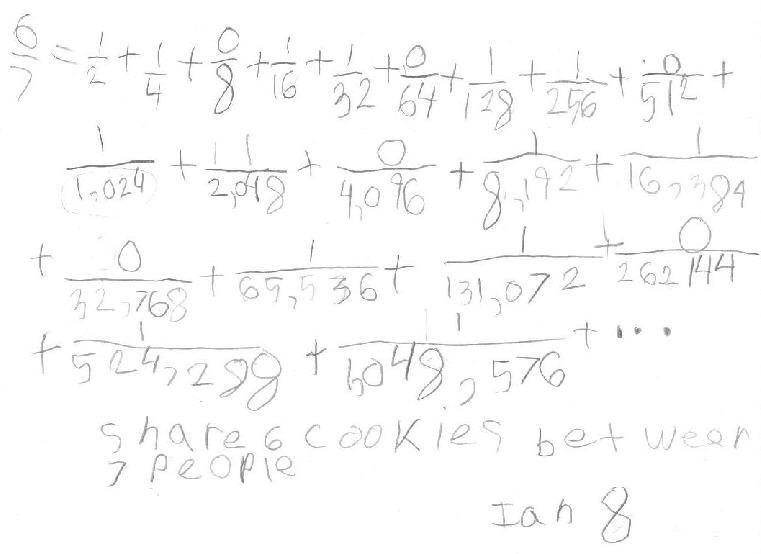

Ian, age 8, shares 6 cookies with 7 people, 2 ways!
Ian first cut the each of the 6 cookies into 7 pieces, naming each piece 1/7. Then he shared the pieces so that each person got 6/7 of a cookie.
Then Don asked Ian to use the special scissors which cut into 2 equal pieces, and do the same problem: share 6 cookies between 7 people. This is what he ended up with (Don never asked him to do all of this!):
Fine job Ian!